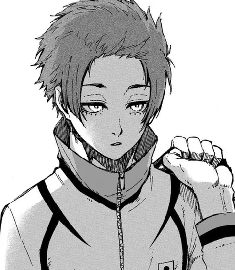

Sae Itoshi
Prodígio da geração, joga nas categorias de base do Re Al, na Espanha. É a estrela da Sub-20 no jogo contra o Blue Lock.
- Posição
- Meia central / ofensivo (antes atacante)
- Arma
- Técnica de chute perfeita (passe e finalização), drible, reflexo, Metavision, Flow
- Ranking Blue Lock
- — (não participa do Blue Lock)
Trajetória: fase → time → nº
- Clube → Re Al (Espanha, base)
- Blue Lock × Sub-20 → Japão Sub-20 → nº 10
Fonte: Blue Lock Wiki – Sae Itoshi